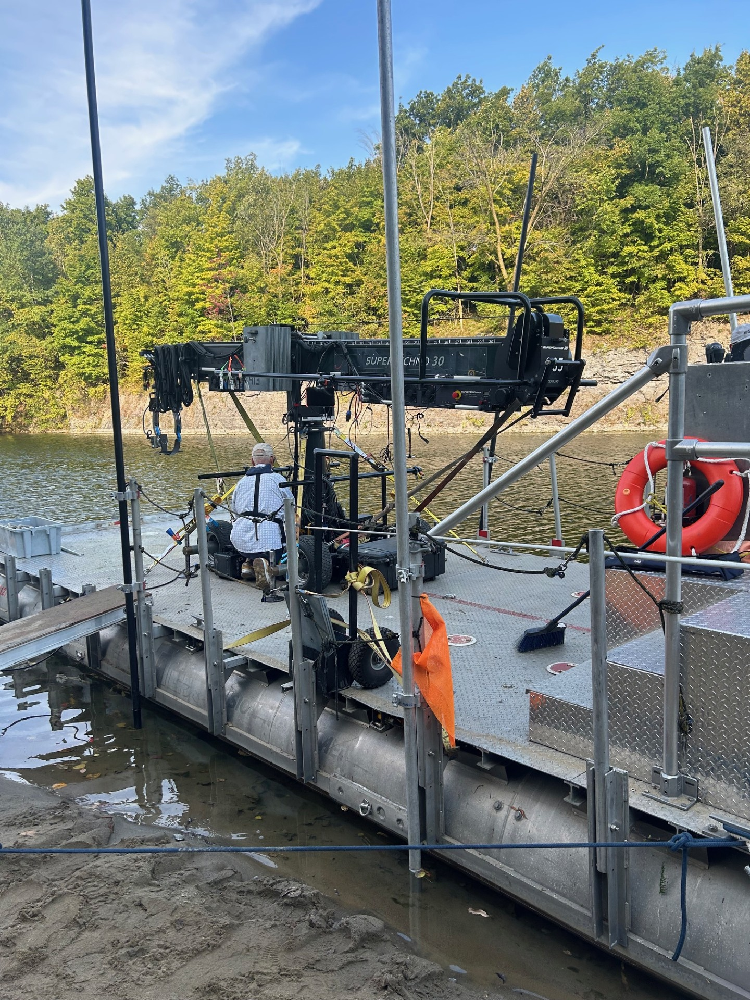
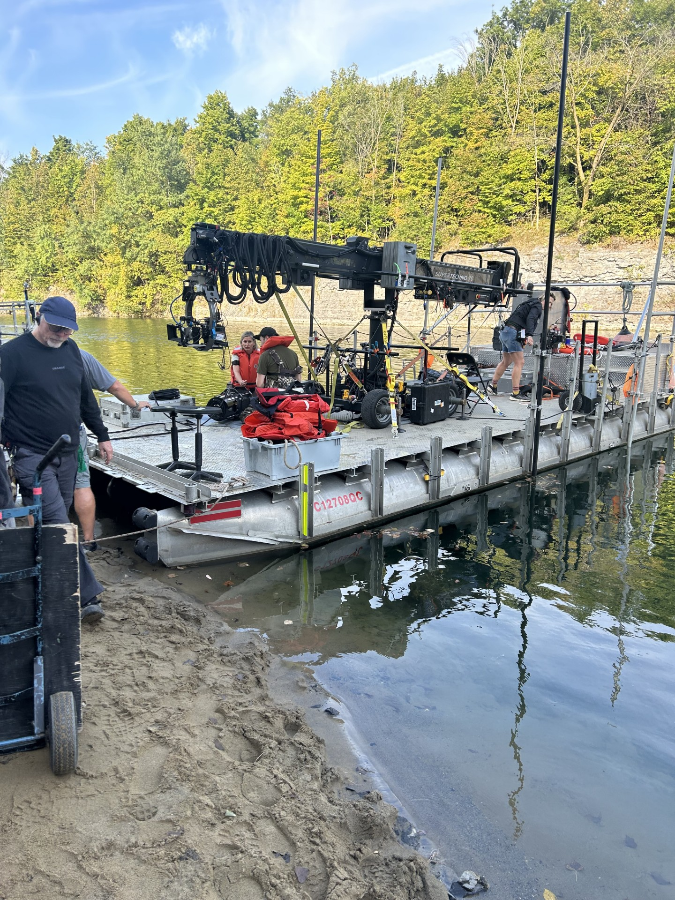
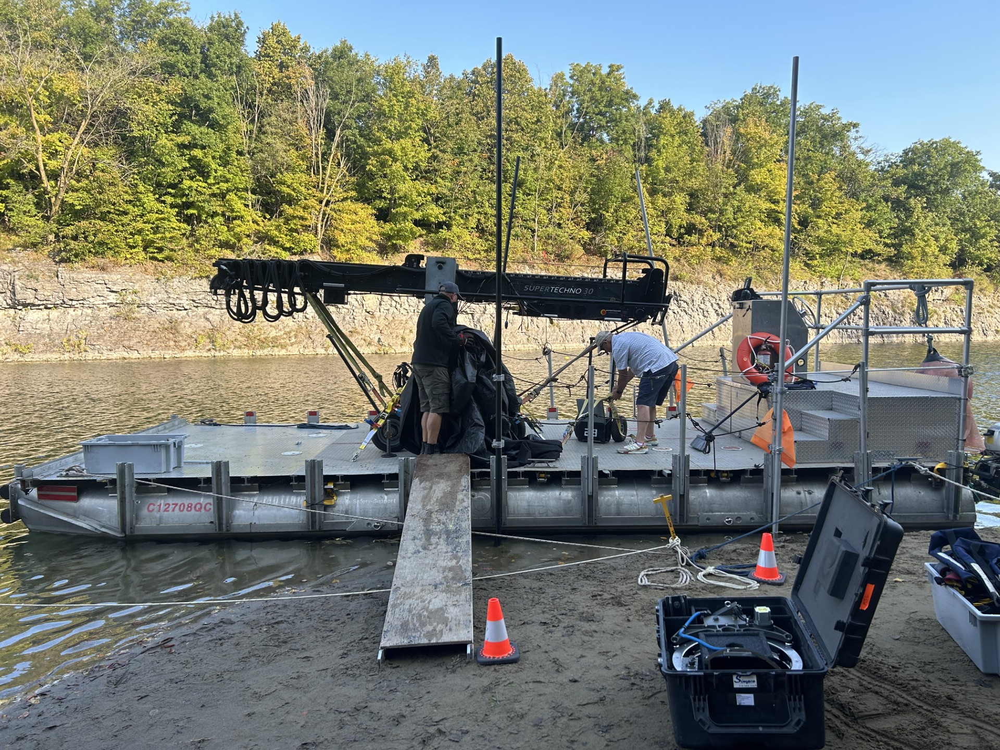

- Marine VHF radio with Mayday function
- GPS chart plotter
- Draft: 26 inches
- Air Draft: 8 ft
- Deck Capacity: 6000 lbs
- Passengers: Maximum 12
- Minimum Crew: 2
- Fuel: Premium 92+ Octane
Transport Canada certified production support vessel designed for film production, marine coordination, camera crane operation, and water-based filming logistics.


